官方 4DGS 基线
40.73 dB PSNRD-NeRF bouncingballs，26936 个高斯，完整 20 个测试视角。标准 LPIPS-Alex：0.010065。
新增9组均匀L2，并核验复用15组E13对照。相同λ下，L2的PSNR和时序残差更好，CTD对分布偏离限制更强；有效约束强度不同，不能据此判定谁全面更优。完整4DGS自适应致密化仍未完成；本轮仅更新本地。
D-NeRF bouncingballs，26936 个高斯，完整 20 个测试视角。标准 LPIPS-Alex：0.010065。
固定 10000 个高斯，SH＋opacity 联合微调；逐帧几何对照为 37.05 dB。数值为三个外观训练顺序种子的均值。
相同10256个高斯、初始化和训练顺序；三个预设权重全部报告。下一步匹配实际分布偏离后比较。
| 条件 | GT PSNR ↑ | GT LPIPS ↓ | 真实CTD相对初始增幅 | 256时序残差 ↓ |
|---|---|---|---|---|
| 只优化外观（复用E13） | 38.0895 | 0.013998 | 0.000% | 0.00054959 |
| 位置／渲染（复用E13） | 39.6079 | 0.013608 | 12.126% | 0.00038096 |
| CTD λ=0.001（复用E13） | 39.5697 | 0.013488 | 4.313% | 0.00039116 |
| 均匀L2 λ=0.001 | 39.5937 | 0.013499 | 6.944% | 0.00038439 |
| CTD λ=0.01（复用E13） | 39.3365 | 0.013469 | 0.934% | 0.00043489 |
| 均匀L2 λ=0.01 | 39.4634 | 0.013366 | 2.049% | 0.00041165 |
| CTD λ=0.1（复用E13） | 38.7226 | 0.013755 | 0.096% | 0.00050389 |
| 均匀L2 λ=0.1 | 39.0132 | 0.013561 | 0.313% | 0.00048352 |
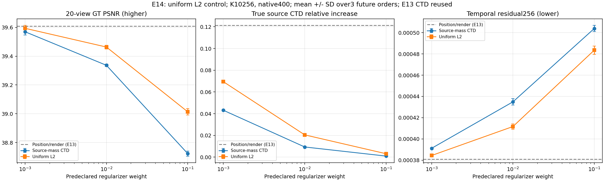
同λ不是相同有效约束：λ=0.01时，CTD为39.336 dB、真实CTD增幅0.934%；L2为39.463 dB、增幅2.049%。源质量CTD对分布偏离限制更强，但当前未证明其画质／时序优于普通L2。两种二次项权重总和均为1，使用相同初始CTD分母。下一步仅按拟合集分布偏离校准约束强度，再比较留出／GT，不按测试分数挑λ。支持数、协方差、分配和deformation仍固定，尚非完整动态OT／自适应致密化。全部24组CSV（9新＋15复用） · 同λ配对效应
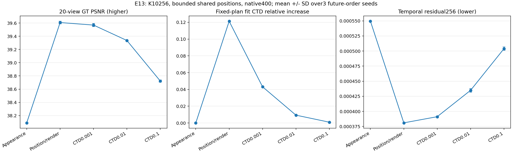
位置自由度带来约+1.52 dB；弱CTD（λ=0.001）为39.57 dB，并将CTD增幅从12.13%限制到4.31%。这是新增分布误差减少约64.4%，不是整体CTD下降64.4%。固定分配下该项等价源质量加权位置锚定，尚未证明优于普通L2或提高最高PSNR。E14已补均匀L2对照，见上表。CTD逐源代价与二次式差约3.4e-21；支持数、协方差与deformation仍固定，尚非完整动态OT或自适应致密化。全部15组CSV · 配对效应
| 第二次事件 | 学生／教师方式 | 高斯数 | GT PSNR ↑ | GT LPIPS ↓ |
|---|---|---|---|---|
| 不做第二次split | 学生400／教师400 | 10128 | 37.8642 | 0.014279 |
| 不做第二次split | 学生400／教师800降至400 | 10128 | 37.1579 | 0.017100 |
| 不做第二次split | 学生和教师均800降至400 | 10128 | 37.8805 | 0.014162 |
| CTD新增128 | 学生400／教师400 | 10256 | 38.0895 | 0.014000 |
| CTD新增128 | 学生400／教师800降至400 | 10256 | 37.3080 | 0.016924 |
| CTD新增128 | 学生和教师均800降至400 | 10256 | 38.1039 | 0.013890 |
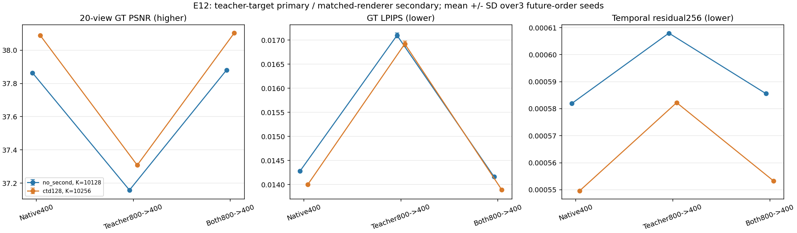
教师图像更贴近GT不保证学生更好：学生仍400时只换教师，PSNR下降约0.71～0.78 dB。两侧一起800渲染再缩400，比原基准仅高约0.014～0.016 dB，LPIPS略好但原生256时序残差略差，学生每步渲染像素约4倍。保留两侧一致的低成本原生400基准，下一步回到可学习几何与CTD分布约束对照。当前仍固定教师和几何，尚未完成完整4DGS自适应致密化。全部18组CSV · 配对效应 · split边际收益
| 即时评分 | 同拟合400 GT-MSE | 配对测试400 GT-MSE | 配对测试800 GT-MSE | 原GT PSNR |
|---|---|---|---|---|
| 教师 L1＋SSIM | 0.358 | 0.258 | 0.363 | 0.282 |
| 教师 MSE | 0.467 | 0.297 | 0.432 | 0.436 |
| 真实训练图像 L1＋SSIM | 0.651 | 0.426 | 0.436 | 0.537 |
| 真实训练图像 MSE | 0.865 | 0.497 | 0.295 | 0.393 |
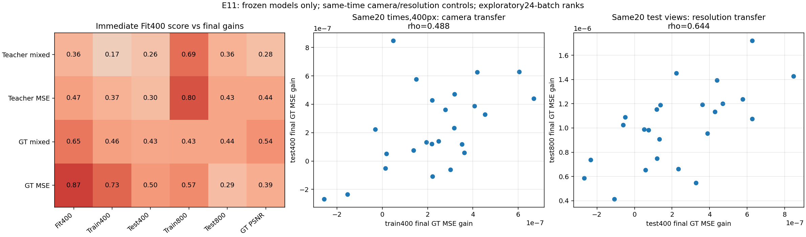
| 视图 | 教师原生400 MSE | 教师800降至400 MSE |
|---|---|---|
| 原拟合20视图 | 0.00014789 | 0.00001688 |
| 配对训练20视图 | 0.00015437 | 0.00002088 |
| 配对测试20视图 | 0.00020452 | 0.00007901 |
教师更贴近GT的800降采样结果，尚未证明能提升学生画质。下一步固定CTD候选、初始化与训练步数，检验两种教师图像生成方式。原生渲染分辨率变化、监督目标与视角泛化都可能影响排名；本次不归因于单一因素。全部输入模型未变，E10指标复现与误差分解核验通过。全部评分相关性 · 相机／分辨率迁移
| 预测分数 | 最终拟合收益 | 最终留出收益 | GT PSNR收益 | GT LPIPS下降 |
|---|---|---|---|---|
| 即时渲染收益 | 0.604 | 0.583 | 0.282 | 0.067 |
| 训练20步后的收益 | 0.741 | 0.750 | 0.423 | 0.060 |
| 训练76步后的收益 | 0.857 | 0.735 | 0.450 | 0.090 |
| 窗口 CTD 收益 | 0.195 | 0.059 | 0.204 | -0.044 |
| 平均 CTD 收益 | 0.073 | -0.084 | 0.069 | -0.087 |
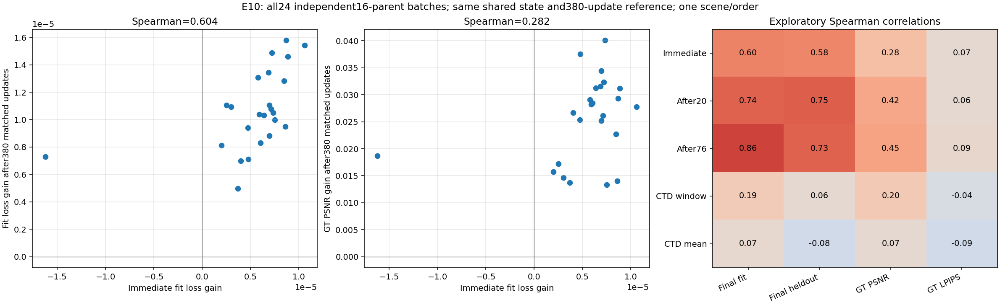
24批最终均提高GT PSNR（相对匹配对照+0.01329～0.04011 dB）。一批即时损失变差，训练后仍提高0.01866 dB，提示即时硬拒绝可能漏掉有潜力的候选。短期分数主要预测教师拟合，尚不能替代真实画质评估。补充读取联合模型时，教师损失收益与单批之和总体接近，但仍有非线性偏差。下一步检查同相机／同分辨率下的损失与监督目标差别。仍固定教师和几何，没有新策略或完整4DGS自适应致密化。相关性 CSV · 全部24批结果
| 第二次选点方式 | GT PSNR ↑ | GT LPIPS ↓ | 留出对教师 PSNR ↑ | 时序残差 ↓ |
|---|---|---|---|---|
| 固定 CTD 排序 | 38.0875 | 0.014017 | 41.1799 | 0.00054961 |
| 当前状态渲染评分 | 38.0655 | 0.013969 | 41.2299 | 0.00055398 |
| 较早状态渲染评分 | 38.0574 | 0.013957 | 41.2149 | 0.00055445 |
| 候选池内随机批次 | 38.0719 | 0.013977 | 41.1884 | 0.00055344 |
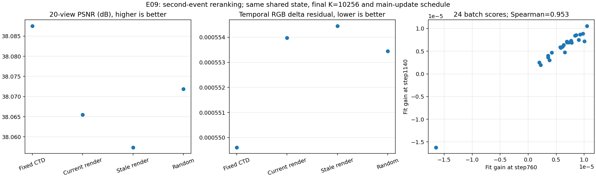
当前渲染评分相较固定CTD改选80/128个父高斯，GT PSNR低0.0220 dB，LPIPS与留出对教师拟合略好，时序残差略差，尚无整体优势。新旧渲染评分选中112/128相同，当前组比旧组PSNR高0.0082 dB；单种子不作显著性结论。两次评分共额外1000张渲染，主训练匹配不代表总计算成本相同。下一步验证即时评分能否预测后续优化收益；保持固定教师／子轨迹几何的范围说明。下载重新选点 CSV
| 条件 | 最终高斯数 | PSNR（dB） | 累计高斯更新 |
|---|---|---|---|
| 不 split 继续训练（复用） | 10000 | 37.6878 | 15200000 |
| 一次全部接受 @760（复用） | 10256 | 38.0907 | 15394560 |
| 两次全部接受 @760/1140 | 10256 | 38.0871 | 15345920 |
| 一次全部接受 @1140 | 10256 | 38.0854 | 15297280 |
| 一次即时门控（复用） | 10256 | 38.0906 | 15394560 |
| 两次即时门控 | 10256 | 38.0875 | 15345920 |
| 一次20步门控（复用） | 10224 | 38.0682 | 15370240 |
| 两次20步门控 | 10224 | 38.0662 | 15321600 |
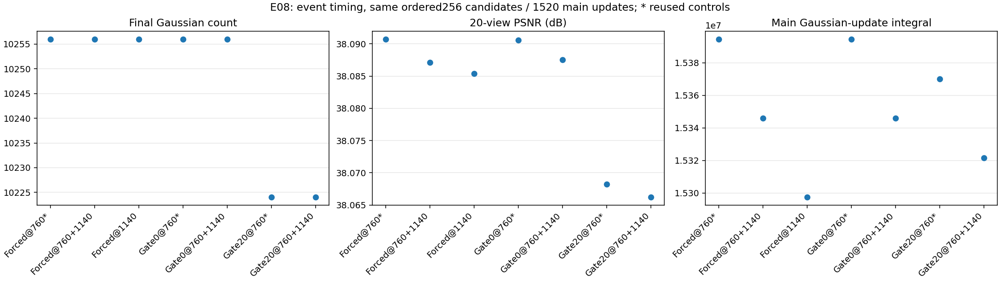
本次两次强制接受比早期一次低0.00359 dB，20步门控低0.00204 dB，未观察到分批执行固定名单的画质收益。两次强制组累计高斯更新少约0.316%，这不是实测耗时或推理加速；仍为单种子结果。下一步根据当前拟合误差更新第二次候选选择，验证能否优于固定排序。教师／子轨迹几何仍固定，尚非完整4DGS自适应致密化。下载事件时机 CSV
| 条件 | 最终高斯数 | PSNR（dB） | 额外试跑更新 |
|---|---|---|---|
| 零惩罚，试跑 20 步 | 10240 | 38.083 | 640 |
| 五倍惩罚，试跑 20 步 | 10128 | 37.927 | 640 |
| 标准惩罚，不试跑 | 10256 | 38.091 | 0 |
| 标准惩罚，试跑 80 步 | 10240 | 38.083 | 2560 |
| 标准惩罚，试跑 20 步（复用 E06） | 10224 | 38.068 | 640 |
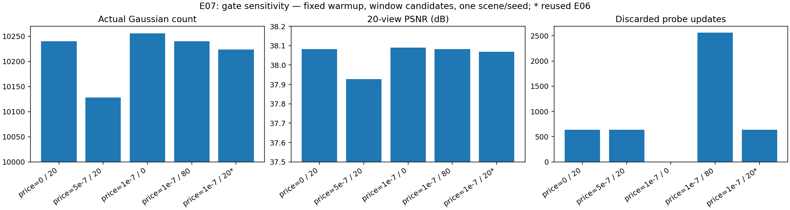
价格能控制接受数量，但当前未证明短试跑带来稳定的筛选优势。不试跑的 38.091 dB 与先前全部接受对照基本一致；80 步为 38.083 dB。零价格 20 步与标准价格 80 步接受相同父集合，差异约 0.00023 dB。四组新实验在评估前固定，未按测试分数选参数；标准条件复用 E06，并非独立重复。下一步比较固定候选总预算下的一次／多次事件，并保留不试跑对照。下载敏感性 CSV
| 方法 | 最终高斯数 | 测试 PSNR（dB） | 接受批数 |
|---|---|---|---|
| 不 split，继续训练 | 10000 | 37.688 | — |
| 窗口候选全部接受 | 10256 | 38.091 | 16/16 |
| 窗口候选按门控接受 | 10224 | 38.068 | 14/16 |
| 随机候选全部接受 | 10256 | 37.820 | 16/16 |
| 随机候选按门控接受 | 10112 | 37.760 | 7/16 |
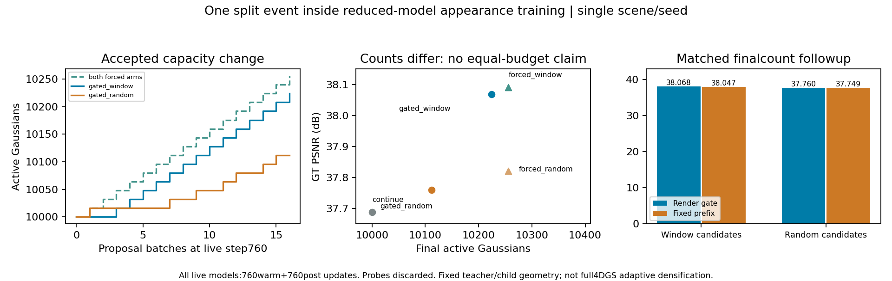
| 候选来源 | 两组高斯数 | 渲染门控 PSNR | 固定前缀 PSNR |
|---|---|---|---|
| 窗口候选 | 10224 | 38.068 | 38.047 |
| 随机候选 | 10112 | 37.760 | 37.749 |
接受规则只查看 76 个拟合时刻：在其中 56 个视图上做匹配的短试跑，在另外 20 个拟合视图上判断渲染收益是否超过复杂度代价，且任一拟合时间窗口不能恶化超过 1%。这些视图仍属于拟合集；74 个留出时刻与测试集不参与决定。主模型各 1520 步，四个提案分支各另有 640 步会被丢弃的试跑，不声称计算量相同。
E06阶段仅验证固定教师／子轨迹几何下的一次约简模型容量事件。CTD 负责提出并排序跨时间候选，接受判据使用渲染收益与复杂度；E06未实现可微CTD联合训练（E13新增固定分配位置约束项），完整4DGS几何／deformation自适应致密化、重新生成子轨迹的重复事件或 merge。同数量改善约 0.01～0.02 dB，证据仍弱，需要更多种子、阈值／试跑长度和场景验证。下载事件对照 CSV
| 优化参数 | 共享几何 | 逐帧几何对照 | 每组可训练参数 |
|---|---|---|---|
| 仅 SH | 35.604 | 35.381 | 480000 |
| 仅 opacity | 36.705 | 36.655 | 10000 |
| SH＋opacity | 37.493 | 37.051 | 490000 |
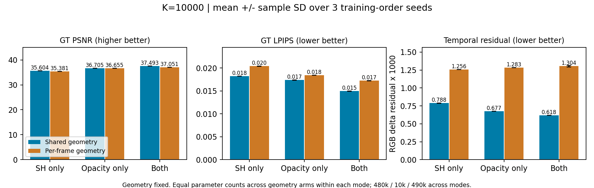
| 候选选择 | 高斯数 | 测试 PSNR（dB） | 留出 CTD 下降 |
|---|---|---|---|
| 不 split，继续微调 | 10000 | 37.690 | 0.0% |
| 持续窗口 CTD 评分 | 10256 | 38.087 | 24.0% |
| 全局平均 CTD 评分 | 10256 | 38.045 | 25.5% |
| 首帧 CTD 评分 | 10256 | 37.977 | 20.4% |
| 随机选择 | 10256 | 37.823 | 3.0% |
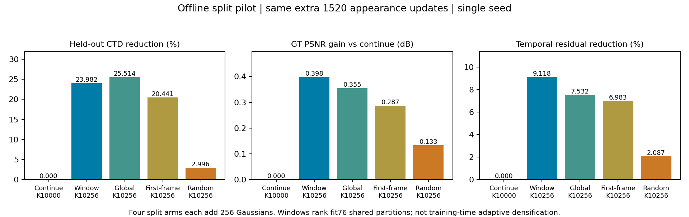
离线原型边界：先在原父分组内用 76 个拟合时刻学习共享二分身份，再按五个时间窗口的最小平均收益评分；不是在线滑动窗口优化。首帧评分也使用同一套跨时间子分组。下一步需要验证更多种子与预算、加入实际渲染收益，再实现训练期 split/merge。
| 新增高斯数 | 窗口评分 | 全局评分 | 随机选择 |
|---|---|---|---|
| +128 | 37.863 | 37.835 | 37.734 |
| +256 | 38.087 | 38.045 | 37.823 |
| +512 | 38.416 | 38.350 | 37.919 |
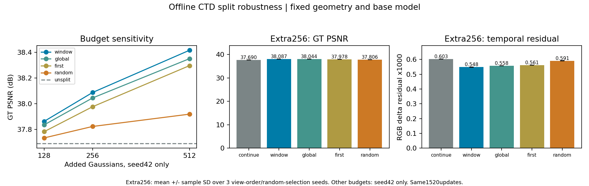
验证范围：128／512 预算仅 seed42；256 预算使用三组训练顺序／随机候选种子，已核对组间没有共享的 epoch 排列。底模、CTD 父分组及子分组保持固定，不是完整流程的独立多种子复现。旧版 seed+epoch 的重叠排列结果保留，但不混入本汇总。仍未实现完整 4DGS 训练期自适应 split/merge。下载逐条件 CSV
GHAP 解决静态表示的全局约简；本项目研究同一分布观点进入时间轴后，如何规范动态 Gaussian 的生长、合并、对应和长期演化。
提供 deformation、轨迹或速度场，但通常沿用逐帧/训练期启发式密度控制，不回答模型阶数如何随运动变化。
在时间窗口内联合决定 split、merge、move、drop，让当前画质、未来运动与模型复杂度使用同一个变分目标。
采样状态转移、Hessian 最速分裂和矩保持拆分提供强静态对照，但都没有解决跨帧身份和变阶一致性。
GHAP 已验证 blockwise GMR 和固定保留率压缩。我们继承其分布观点与优化器，把输入从单个静态 GMM 推进到时间相关 GMM 序列。
某帧产生的新 Gaussian 在下一帧应对应谁？遮挡是暂时不可见还是应当删除？局部细节应只在一帧 split，还是沿整段轨迹分裂？
除位置和协方差，还要比较速度、deformation 或时间轨迹；assignment 应在滑动窗口内稳定，而不是每帧独立重聚类。
Gaussian primitive 的增加和删除首先是表示容量变化。只有其权重被明确定义为物理密度时，才能进一步谈连续性方程与守恒。
OT 不只比较一帧中的两个高斯，还要衡量一个 Gaussian 操作对整段时间窗口的表示、运动和复杂度产生什么影响。
论文已给出 CTD-GMR 的 assignment / barycenter 迭代与静态压缩实验。动态扩展应在窗口长度 K=1、关闭运动项时退化回这一基线。
N、位置、协方差和权重都随时间变化；还需保存 velocity、deformation 或 canonical identity。m 不能默认等于渲染 opacity。
前三项控制每帧表达与容量，Rmatch 约束相邻时刻的运输计划、Gaussian 身份或轨迹不要无意义跳变。
候选由当前残差提出，但是否分裂由未来 K 帧的累计收益决定，避免只为单帧噪声或瞬时遮挡反复增删。
单帧矩保持只负责无突变初始化；动态版本还要让两个子 Gaussian 继承父节点的速度、deformation 与轨迹身份，并允许之后逐渐分化。
均值项是欧氏搬运，协方差项是 Bures 几何。GHAP 有意采用更便宜、barycenter 可闭式更新的 Frobenius 代价；替换成 W₂ 是可选研究变量，而不是修复 GHAP。
s=0 是质量保持的 Benamou–Brenier 动态 OT；只有确有源汇或表示质量变化时才使用 unbalanced OT。动态致密化应由时间窗口累计输运失真触发，而非逐帧阈值。
OT 提供严谨性，但“数学上的质量”“表示容量”和“物理物质”不是同一个概念。
OT 重新分配有限模型容量。即使 m 只是归一化权重，这一层仍有明确数学意义，无需声称物理守恒。
若 m 表示密度或被动标量积分量，连续性方程赋予局部守恒意义；s 必须对应真实源汇或开放边界。
Navier–Stokes、弹性或 MPM 是额外动力学模型。最小输运作用量并不等价于真实流体方程。
GHAP 复现只是入口检查；主体实验从一开始就使用动态序列，逐层加入逐帧约简、窗口一致性和轨迹级变阶。
优先链接论文主页、出版社与作者官方仓库。点击标签筛选；搜索支持标题、作者、方法和备注。
没有匹配的文献，换个关键词试试。
不是把 GHAP 逐帧调用，而是让动态 Gaussian 的每次生长、合并与消失都服从跨时间的运输目标。